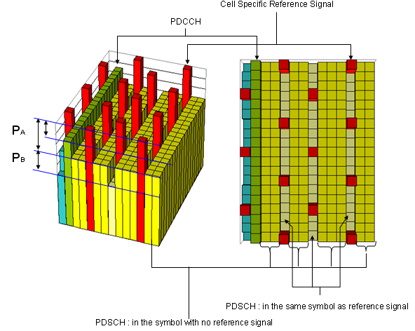
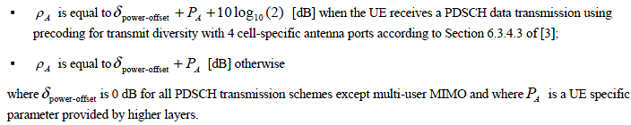
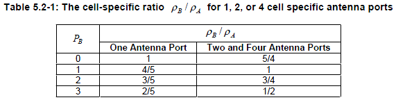

|
LTE Quick Reference Go Back To Index Home : www.sharetechnote.com |
|
|
If you look into the downlink signal, you would notice that it is made up of many different components. For example, Reference Signal, PDCCH, PDSCH etc. Then you would have a question saying "How do we allocate power to each of the those channels ?". The simplest way for our understanding would be to allocate the same power to all of the these channels, but this would be only for the sake of our understanding. For decoding any downlink data, the first step is to detect/decode reference signal. If the power of this reference signal is same as all other channel power, it would not be easy (though not impossible) to detect it. So more practical implementation is to make Reference Signal outstanding comparing to other channels as shown in the red bar in the following plot (you see a certain degree of offset, P_A between Reference Signal and other channel power). However there is a complication with this method and it is because the reference channels occurs only in specific symbols, not in every symbols. It means that there are some symbols with reference signal in it and there are some other symbols without reference signal in it. It implies, if you measure the power of each symbol, some symbol (symbol with reference signal) has higher power than the other symbols (symbol without reference signal). This would cause some complication on the implementation of reciever equalizer. To solve this problem of power difference between two groups of symbols, we can put lesser power to the non-reference signal channels at the symbol carrying reference signal. Due to this, you see another type of offset P_B in the plot shown below. Combining all of these factors, we have pretty complicate peak-and-valley type of power terrain rather than the flat plain terrain in downlink power allocation.

Power offset between PDSCH channel in the symbols with reference signal and PDSCH channel in the symbols without reference signal (P_B) is specified in SIB2 as follows.
+-sib-TypeAndInfo ::= SEQUENCE OF SIZE(1..maxSIB[32]) [1] | +- ::= CHOICE [sib2] | +-sib2 ::= SEQUENCE [00] | +-ac-BarringInfo ::= SEQUENCE OPTIONAL:Omit | +-radioResourceConfigCommon ::= SEQUENCE | | +-rach-Config ::= SEQUENCE | | +-bcch-Config ::= SEQUENCE | | +-pcch-Config ::= SEQUENCE | | +-prach-Config ::= SEQUENCE | | +-pdsch-Config ::= SEQUENCE | | | +-referenceSignalPower ::= INTEGER (-60..50) [18] | | | +-p-b ::= INTEGER (0..3) [0]
Power offset between the Reference Signal and PDSCH channel in the symbols without reference signal (P_A) is specified in RRC Connection Setup as follows. P_A is UE specific power offset. This is why this is specified by RRC Connection Setup message.
+-c1 ::= CHOICE [rrcConnectionSetup-r8] +-rrcConnectionSetup-r8 ::= SEQUENCE [0] +-radioResourceConfigDedicated ::= SEQUENCE [100101] | +-srb-ToAddModList ::= SEQUENCE OF SIZE(1..2) [1] OPTIONAL:Exist | +-drb-ToAddModList ::= SEQUENCE OF OPTIONAL:Omit | +-drb-ToReleaseList ::= SEQUENCE OF OPTIONAL:Omit | +-mac-MainConfig ::= CHOICE [explicitValue] OPTIONAL:Exist | +-sps-Config ::= SEQUENCE OPTIONAL:Omit | +-physicalConfigDedicated ::= SEQUENCE [1111001011] OPTIONAL:Exist | +-pdsch-ConfigDedicated ::= SEQUENCE OPTIONAL:Exist | | +-p-a ::= ENUMERATED [dB-3] | +-pucch-ConfigDedicated ::= SEQUENCE [0] OPTIONAL:Exist | +-pusch-ConfigDedicated ::= SEQUENCE OPTIONAL:Exist | +-uplinkPowerControlDedicated ::= SEQUENCE [1] OPTIONAL:Exist | +-tpc-PDCCH-ConfigPUCCH ::= CHOICE OPTIONAL:Omit | +-tpc-PDCCH-ConfigPUSCH ::= CHOICE OPTIONAL:Omit | +-cqi-ReportConfig ::= SEQUENCE [10] OPTIONAL:Exist | +-soundingRS-UL-ConfigDedicated ::= CHOICE OPTIONAL:Omit | +-antennaInfo ::= CHOICE [defaultValue] OPTIONAL:Exist | +-schedulingRequestConfig ::= CHOICE [setup] OPTIONAL:Exist +-nonCriticalExtension ::= SEQUENCE OPTIONAL:Omit
In Physical Layer performance test, we set Rho A, Rho B as a test condition and the relationship between Rho A/Rho B and P_a/P-b is as follows.

Normally P_B is specified first by SIB2 and P_A is determined by following table and specified in RRC message (e.g, RRC Connection Setup, RRC Connection Reconfiguration) according to following table.

For further details, refer to 36.213 5.2 Downlink power allocation
|